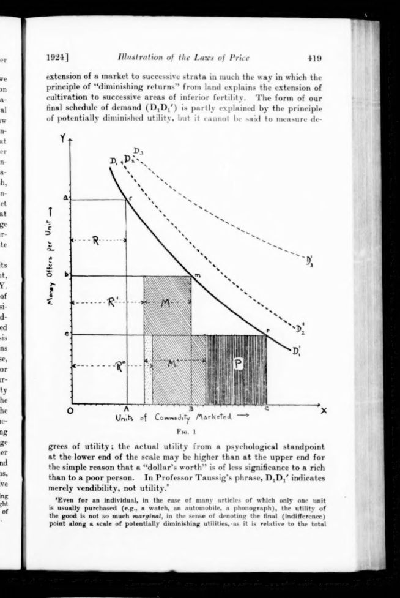

Childs, 1924: de quem são as ondas do rádio?
Leitura: 5 min
William Wallace Childs sustenta que as ondas do rádio ocupam espaço, isto é, terra, e que a transmissão só pode existir por concessão pública, regulada como monopólio natural.


Alguns anos antes, contam os jornais de Washington citados por William Wallace Childs, o dono de um prédio alto comprou o espaço acima de um terreno vizinho para garantir para sempre o uso da luz e do ar que o enchessem. O ar entra e sai a cada brisa, e a luz atravessa o espaço a 186.000 milhas por segundo; o que o comprador adquiriu, diz Childs, foi algo mais imponderável que o ar e mais impalpável que a luz. Em economia, isso se chama terra ou recurso natural; em inglês corrente, espaço. É com esse exemplo que o autor, escrevendo de Washington, pergunta a quem pertencem as ondas do rádio.
O que preocupava no setor?
O ponto de partida é uma investigação recente sobre a indústria do rádio. Segundo ela, as empresas compravam patentes, firmavam contratos exclusivos de fabricação e uso e consolidavam posição sem recorrer a meios abertamente desleais nem a cobranças exorbitantes. A válvula, de que dependia o funcionamento prático dos aparelhos, não era vendida nem alugada separadamente e só podia ser fabricada por duas empresas, que controlavam sua produção e distribuição.
Para Childs, o futuro do setor depende de uma escolha: ou ele vira um monopólio mal regulado por um elaborado sistema jurídico, ou, como propriedade comum da humanidade, rende apenas retornos competitivos ao capital e ao trabalho. A segunda via exige reconhecer que o eletromagnetismo é um recurso natural, impróprio para exploração privada sem controle.
O problema é o ar ou o espaço?
Childs cita Walter S. Rogers, conselheiro americano na Conferência de Paz de Paris, que escrevera em março de 1924 nos Annals da American Academy um texto sobre o ar como matéria-prima. Numa conferência em Washington, no outono de 1920, delegados de cinco potências partiram da ideia de que os governos juntos detinham o direito último sobre os comprimentos de onda e deviam distribuí-los. As grandes empresas privadas de rádio se opuseram.
“Certas empresas privadas de rádio acreditam que, por algo análogo ao que chamamos de direitos de posseiro, podem obter a propriedade pura e simples do direito de usar comprimentos de onda.” (certain private radio companies believe that by something analogous to what we call ‘squatters’ rights” they can secure an actual out-and-out ownership of the right to use wave lengths)
Rogers comparava o rádio à descoberta de um continente desconhecido. Childs responde que o ar nada tem a ver com o assunto, porque só é propriedade o que pode ser possuído e ocupado com exclusividade. O que está em jogo é o espaço, e a propriedade da terra inclui o espaço acima dela. Essa propriedade não é só exclusiva, mas inclusiva: abrange todas as possibilidades. Um intruso científico não teria mais direito de provocar vibrações elétricas no espaço de alguém do que de atravessá-lo com uma carroça ou explodir ali uma tonelada de dinamite. O dono pode até achar, ironiza o autor, que essas vibrações novas são invenções do diabo.
Como conciliar a transmissão com a propriedade?
O direito do proprietário, porém, cede ao domínio eminente do governo e às servidões. Daí a conclusão de Childs: transmitir mensagens por ondas não é um direito que nasça da propriedade da terra, porque não se faz sem invadir a terra alheia; o consentimento dos demais proprietários só pode vir de atos do governo que concedam o uso exclusivo de certos comprimentos de onda. Quem o recebesse teria um monopólio e só poderia funcionar como serviço público, regulado ou estatal.
Na parte final, o autor leva ao absurdo a tese contrária. Se as ondas fossem abertas à apropriação privada por prioridade de descoberta, os americanos, chegando cedo, deveriam cuidar para que a Grã-Bretanha não dominasse as novas ondas e ficar com uma clara maioria delas; as nações pequenas não deveriam ter ondas valiosas, porque isso seria um incentivo permanente à guerra; a especulação com recursos naturais chegaria ao máximo de refinamento, e a avaliação dessas ondas para fins de imposto por agências políticas afundaria ainda mais a moralidade pública.
“A propriedade privada de qualquer campo ou onda natural é apenas uma convenção humana, e seria perigoso estendê-la a esse continente recém-descoberto.” (private property in any natural field or wave is only a human convention and one that it would be dangerous to extend to this new-discovered continent)
Na minha leitura
Na minha leitura, o texto trata o espectro pelas categorias da propriedade da terra: para Childs, as ondas ocupam espaço, que em economia se chama terra, e por isso sua exploração depende de concessão pública. A sátira final sobre nações disputando ondas, com os americanos superando a Grã-Bretanha e as nações pequenas excluídas, serve para mostrar o que o autor via como consequência lógica da apropriação por prioridade.
O artigo saiu quando o regime do rádio americano ainda estava indefinido. A proposta de Childs, licença pública de uso exclusivo de frequências, é uma das posições desse debate; a outra é a reivindicação de direitos de posseiro pelas empresas privadas, que Rogers descrevia.
Glossário
- Comprimento de onda
- medida que identifica a faixa usada por uma transmissão de rádio.
- Domínio eminente
- poder do Estado de tomar a propriedade privada para uso público, mediante indenização.
- Servidão (easement)
- direito limitado de uso sobre a propriedade alheia.
- Monopólio natural
- atividade em que um só operador atende o mercado de forma mais eficiente, e por isso costuma ser regulada.
Fontes
- Problems in the Radio Industry — William Wallace Childs (Washington, D. C.) (pp. 520–523). Internet Archive (número completo, PDF)
- Edição completa, com os demais artigos: Nº 187 do Arquivo.
Documento em domínio público (EUA, publicado antes de 1931), via JSTOR Early Journal Content e Internet Archive. Resumo e comentário do autor deste site, sem afiliação com a American Economic Association. Encontrou um erro? Escreva: a correção é publicada no próprio texto, com data.
← Commons, 1924: quando o preço do aço inclui um frete que não existe ↑ Nº 187 · Pittsburgh-plus, a lei de receita de 1924 e o banco central alemão Hardy, 1924: quando o aumento da demanda baixa os preços →